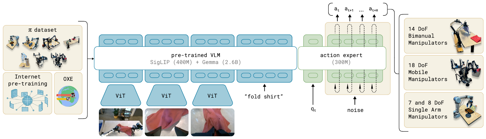
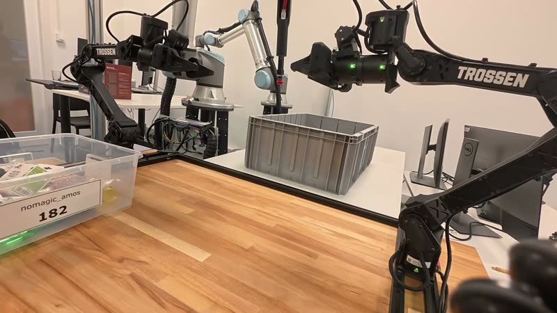

Motivation
Generative AI
Today's framework: generation = sampling from a distribution
$$z \sim q$$
$q : \mathbb R^d \to \mathbb R_{\ge 0}$ — we do not know this density, but we have samples of it
The goal and general idea
We can easily sample from known distributions
Deformable simulations: studied for decades
Combine the two ideas to generate samples from the distribution of interest
Overview
1 · preliminaries
deformation, probability
2 · learning deformation
likelihood, residual flows, flow matching
3 · extensions, applications & discussion
diffusion, conditioning, physical AI
images & video
Stable Diffusion 3, Flux (flow matching); Sora, Veo (diffusion)robot control
π0, π0.5 (flow matching)proteins & molecules
RFdiffusion, AlphaFold 3 (diffusion)audio
Voicebox (flow matching), Stable Audio (diffusion)Deforming probability
$\mathbb P[X \in A] = \mathbb P[Y \in \varphi(A)]$: the mass moves with the map. Arrows: the two sides of $A$ after the map, i.e. the columns of the Jacobian $D\varphi$ times the side length (for small $A$). The area they span, relative to $A$, is the local area change $|\det D\varphi|$.
Consider an invertible map between random variables: $$Y = \varphi(X)$$
Probabilities have to stay the same: $$\mathbb P[Y \in B] = \mathbb P[X \in A] \;\Longrightarrow\; \int_B p_Y(y)\,dy = \int_A p_X(x)\,dx$$
Substitute $x = \varphi^{-1}(y)$ on the right: $$\int_A p_X(x)\,dx = \int_B p_X\big(\varphi^{-1}(y)\big)\,\big|\det D\varphi^{-1}(y)\big|\,dy$$
Deforming probability: example
A simple idea how one could learn the deformed distribution
A parametrised density, e.g. a mixture of Gaussians: $$p_\theta(x) = \sum_{k=1}^K \pi_k\, \mathcal N(x;\, \mu_k, \Sigma_k), \qquad \theta = \{\pi_k, \mu_k, \Sigma_k\}_{k=1}^K$$
When is the fit good? KL divergence
When our model distribution $\cp{p_\theta}$ is close to the unknown target distribution $\cq{q}$:
the Kullback–Leibler divergence
Consider a coin flip:
HHTHTTH … $N_H$ heads, $N_T$ tails
Compare the probabilities under the true distribution $\cq{q}$ against the model $\cp{p}$:
$$\Big(\prod_{i=1}^N \frac{\cq{q}(x_i)}{\cp{p}(x_i)}\Big)^{1/N} = \Big(\frac{\cq{q_H}^{N_H}\, \cq{q_T}^{N_T}}{\cp{p_H}^{N_H}\, \cp{p_T}^{N_T}}\Big)^{1/N}$$Take the log and consider $N \to \infty$ (so, e.g., $N_H/N \to \cq{q_H}$):
$$\frac{N_H}{N}\log\frac{\cq{q_H}}{\cp{p_H}} + \frac{N_T}{N}\log\frac{\cq{q_T}}{\cp{p_T}} \;\longrightarrow\; \sum_x \cq{q}(x)\log\frac{\cq{q}(x)}{\cp{p}(x)}$$KL divergence in practice
Split the log:
$$D_{\mathrm{KL}}(\cq{q}\,\|\,\cp{p_\theta}) = \underbrace{\mathbb E_{x\sim \cq{q}}[\log \cq{q}(x)]}_{\text{does not depend on } \theta} \underbrace{- \mathbb E_{x\sim \cq{q}}[\log \cp{p_\theta}(x)]}_{\text{cross-entropy}}$$The first term is a property of the data alone (its entropy, up to sign): unknown, but the same for every $\theta$. Only the second term moves when we change the model.
Monte Carlo: $$\mathbb E_{x \sim \cq{q}}[f(x)] \approx \frac{1}{N}\sum_{i=1}^N f(x_i), \qquad x_i \sim \cq{q}$$ samples drawn according to the distribution
Is the mixture of Gaussians the best choice?
Parameter cost. A Gaussian in $d$ dimensions needs at least $d$ numbers, for its mean alone. How many Gaussians does the budget of a 7B network buy?
We might want to learn a family of distributions $\{\, p_\theta(\,\cdot \mid y) \,\}_y$ (e.g., one distribution per prompt). A mixture has no natural extra input path to allow conditioning.
Residual flows
We can try with a neural network instead:
$$X \sim p_{\text{init}}, \qquad \Phi_\theta(X) \sim \cp{p_\theta}$$
It has to be a valid probability deformation: $$\cp{p_\theta}(x) = p_{\text{init}}\big(\Phi_\theta^{-1}(x)\big)\,\big|\det D\Phi_\theta^{-1}(x)\big|$$
- it has to be invertible…
- …and we must be able to compute the determinant efficiently
One way to do it: residual networks (Lecture 4)
If $u_{k,i}$ depends only on $x_1, \dots, x_i$, we can invert one coordinate at a time: $\varphi_k$ is invertible as soon as no diagonal entry vanishes, and the triangular Jacobian makes the determinant a product:
A residual step is an Euler step
residual block (Lecture 4)
$$x_{k+1} = x_k + \delta\, u_k(x_k)$$
Euler's method for $\frac{dx}{dt} = u(t, x)$
$$x(t + h) \approx x(t) + h\, u\big(t, x(t)\big)$$
a numerical solver for an ordinary differential equation (ODE); the step $h$ is the solver's choice
Numerical integration: the step size matters
$$x_{k+1} = x_k + h\, u(x_k), \qquad h = \frac{T}{n}$$
Euler's method: $n$ steps of size $h$ over the time $T$. Here $u(x, y) = (-y,\, x)$ is a rotation and $T = 2\pi$ is one full turn, so the exact solution stays on its circle.
Euler follows the tangent, so large steps drift away. More steps = a more faithful flow, at the cost of more evaluations of $u$. Remember this for sampling.
Probability flows
A flow: a velocity field moving every point
$$\frac{d}{dt}\varphi_t(x) = u_t\big(\varphi_t(x)\big), \qquad \varphi_0(x) = x$$
Glossary:
- $\varphi_t(x)$: where the point that started at $x$ is at time $t$
- $u_t(x) = u(t, x)$: the velocity field — the thing we directly learn
What we get
any network
$v_\theta(t, x)$ needs no invertibility: an ODE can always be run backwards in timean arbitraty number of steps
how many numerical integration steps, how big, how computed is not baked in into the networkthe density is derived implicitly
$$\log p_1(x_1) = \log p_0(x_0) - \int_0^1 \nabla\!\cdot u_t(x_t)\,dt,$$ the continuous version of $$\log p_{\text{init}}\big(\varphi^{-1}(x)\big) + \sum_{k=1}^N \log\big|\det D\varphi_k^{-1}|$$$$\mathcal L_{\text{FM}}(\theta) = \mathbb E_{\,t \sim U[0,1],\; x \sim p_t}\; \big\| v_\theta(t, x) - u_t(x) \big\|^2$$
Why a velocity field defines a probability path optional
$$\frac{\partial p_t(x)}{\partial t} = -\,\nabla\!\cdot\big(p_t(x)\, u_t(x)\big)$$
The continuity equation: the density at $x$ changes exactly by the net inflow of probability mass carried by the velocity field. Mass is neither created nor destroyed — only moved.
$u_t$ generates $p_t$ when this holds. The equation is linear in $(p_t,\, p_t u_t)$ — we use that on the marginal-velocity slide.
Flow matching
Suppose we knew a velocity field $u_t$ that carries $\mathcal N(0, I)$ onto $p_{\text{data}}$ along a probability path $p_t$. Fit a network to it by least squares:
$$\mathcal L_{\text{FM}}(\theta) = \mathbb E_{\,t \sim U[0,1],\; x \sim p_t}\; \big\| v_\theta(t, x) - u_t(x) \big\|^2$$
a random moment
a point where the flow actually passes at time $t$
the network: any architecture, inputs $t$ and $x$
the target velocity
Problems:
- We know neither $p_t$ (no way to sample) nor $u_t$ (no target).
- Infinitely many flows go from noise to data, and
- we cannot write down a single one of them...
Single sample simple paths
Can design reasonable paths if we consider datasets with single datapoints:
conditional probability path $p_t(x \mid x_1)$: from $\mathcal N(0, I)$ at $t = 0$ to a distribution gathered around $x_1$ at $t = 1$ (our design choice)
As before, a related conditional vector field $u_t(x \mid x_1)$ determines the conditional deformation (continuity equation): $$\frac{\partial}{\partial t}\, p_t(x \mid x_1) = -\,\nabla\!\cdot\Big(p_t(x \mid x_1)\; u_t(x \mid x_1)\Big)$$
For some families of conditional paths exact formulas for $u_t(x \mid x_1)$ can be derived (see animation above).
Mixtures of single datapoint paths
Average the simple paths over all data points:
$$p_t(x) = \int p_t(x \mid x_1)\; p_{\text{data}}(x_1)\, dx_1$$
- $t = 0$: every conditional path starts at $\mathcal N(0, I)$, so $p_0 = \mathcal N(0, I)$
- $t = 1$: a tiny Gaussian around each data point, so $p_1 \approx p_{\text{data}}$
- in between: a valid probability path from noise to data
The velocity of the mixture
One can* show that at a given point on the trajectory the mixture velocity is the average of the simple velocities:
* relatively easily; again, via the continuity equation
The trick: regress on the conditional velocity instead
Surprisingly, one can* show that:
$$\underbrace{\mathbb E_{t,\; x \sim p_t}\, \big\| v_\theta(t, x) - u_t(x) \big\|^2}_{\mathcal L_{\text{FM}}(\theta) \ \text{(unconditional loss)}} \;=\; \underbrace{\mathbb E_{t,\; x_1 \sim p_{\text{data}},\; x \sim p_t(\cdot \mid x_1)}\, \big\| v_\theta(t, x) - u_t(x \mid x_1) \big\|^2}_{\mathcal L_{\text{CFM}}(\theta) \ \text{(conditional loss)}} + \text{const}$$Think of changing the sampling scheme: instead of sampling $x \sim p_t$, estimating $\bar{u}_t(x)$ for each $x$ and then estimating the loss based on the estimated targets, we sample single conditional arrows $u_t(x \mid x_1)$ all over the space, compute the squared error for each and compute the average to estimate the loss.
*again, relatively easily
The same $p_t$, different paths
The conditional arrows (left) move points along straight lines that can cross. The marginal field moves the same points along curves that never cross. At every $t$, both in the right and in the left animation, we have a sample from the same $p_t$. The resulting samples are not the same, but the underlying distributions are
The whole algorithm
training
initialize θ randomly
repeat:
x1 ← a minibatch of data
x0 ← noise N(0, I) # same shape as x1
t ← Uniform[0, 1] # one per example
xt ← (1 − t) · x0 + t · x1
L ← ‖ v_θ(t, xt) − (x1 − x0) ‖²
θ ← θ − η · ∇_θ Linference
x ← noise N(0, I)
for k = 0, …, n−1:
x ← x + (1/n) · v_θ(k/n, x)
return xWatch it learn
A 3-layer MLP $v_\theta(t, x)$ trained in your browser with Adam on the conditional loss (backprop written by hand, as in Lecture 1). Blue: the samples it generates right now, with 12 Euler steps.
Inference: number of steps changes the result
For the proofs: conditional expectation optional
$\mathbb E[X \mid \mathcal B]$ is a random variable: the average of $X$ over each cell you can resolve with the information $\mathcal B$. A camera metaphor: finer information, sharper picture.
$$\mathbb E\big[\,\mathbb E[X \mid \mathcal B]\;\big|\;\mathcal A\big] = \mathbb E[X \mid \mathcal A] \quad\text{whenever } \mathcal A \subseteq \mathcal B$$
A low-resolution picture of a high-resolution picture is just the low-resolution picture; with no information at all, $\mathbb E\big[\mathbb E[X \mid \mathcal B]\big] = \mathbb E[X]$. The theorem on the previous slides is this identity applied to $\mathbb E[x_1 - x_0 \mid x_t]$.
Diffusion models
| flow matching | diffusion | |
|---|---|---|
| sampling | ODE: deterministic steps | SDE: every step adds noise |
| what is learned | the velocity $u_t$ | the score $\nabla_x \log p_t$ (or the noise) |
| training | the same trick: regress on a per-data-point target | |
Conditional generation
Conditioning on a prompt
- $v_\theta(t, x, y)$: the condition $y$ is one more input — a class label, a text embedding, an image, a robot observation
- training pairs $(x_1, y)$ come from the data set
- the loss is unchanged
- inference: fix $y$ and run the same numerical integration loop
Video: how do AI images and videos work?
Welch Labs, guest video on 3Blue1Brown, from 28:16 · youtube.com/watch?v=iv-5mZ_9CPY
Example application: π0

Black et al., π0: A Vision-Language-Action Flow Model for General Robot Control, 2024 · figure: Fig. 3 of the paper, annotated
Example application: π0 - idea
Example application: π0 - how it looks in real life
We are doing research in these areas at MIMUW



Flow-matching and diffusion policies for bimanual manipulation, trained from demonstrations. If you want to work on this, talk to us.
Summary
- Flow matching deforms a known distribution onto the target distribution
- At inference, we draw a sample from the known distribution and numerically integrate the deformation.
- A deformation in time is a flow
- Learning the velocity avoids introducing explicit constraints for the network
- Through conditioning we try to learn families of probability distributions at once.
Further reading
- Lipman, Chen, Ben-Hamu, Nickel, Le — Flow Matching for Generative Modeling (ICLR 2023): the paper, with the theorems for Gaussian paths
- Liu, Gong, Liu — Flow Straight and Fast (rectified flow) and Albergo, Vanden-Eijnden — stochastic interpolants (both 2022): closely related formulations
- Holderrieth, Erives — MIT 6.S184: Flow Matching and Diffusion Models: lecture notes and labs
- Fjelde, Mathieu, Dutordoir — An introduction to Flow Matching (Cambridge MLG blog): interactive figures
- Lipman et al. — Flow Matching Guide and Code (2024) and TorchCFM: reference implementations
- Black et al. — π0: A Vision-Language-Action Flow Model for General Robot Control (2024)